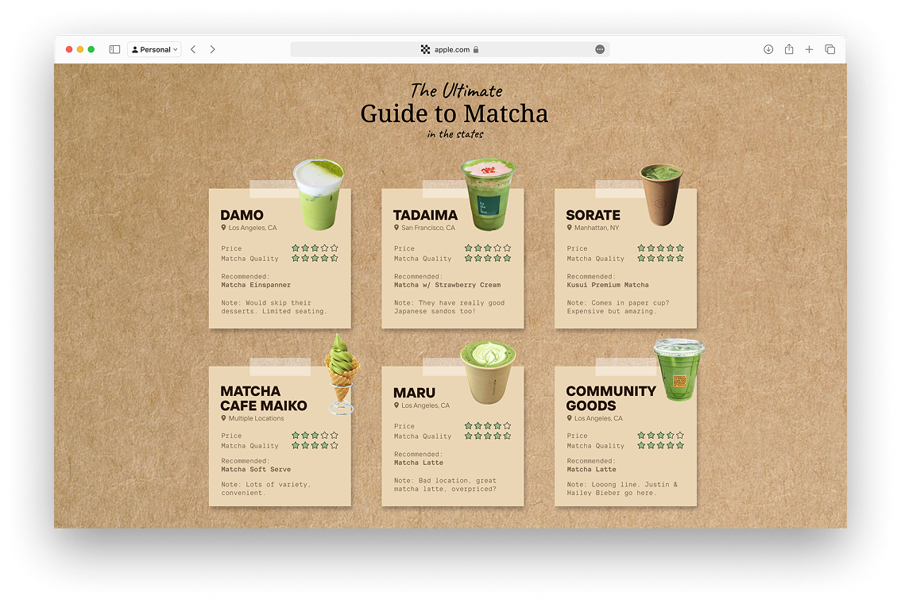
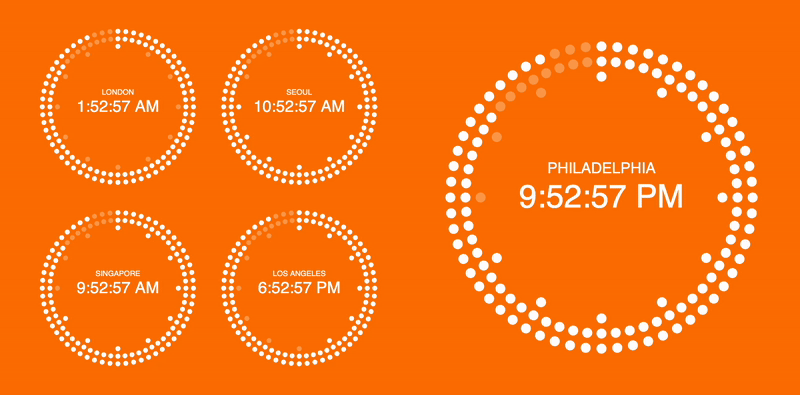
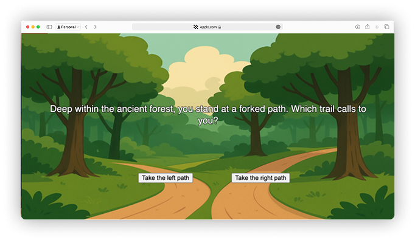
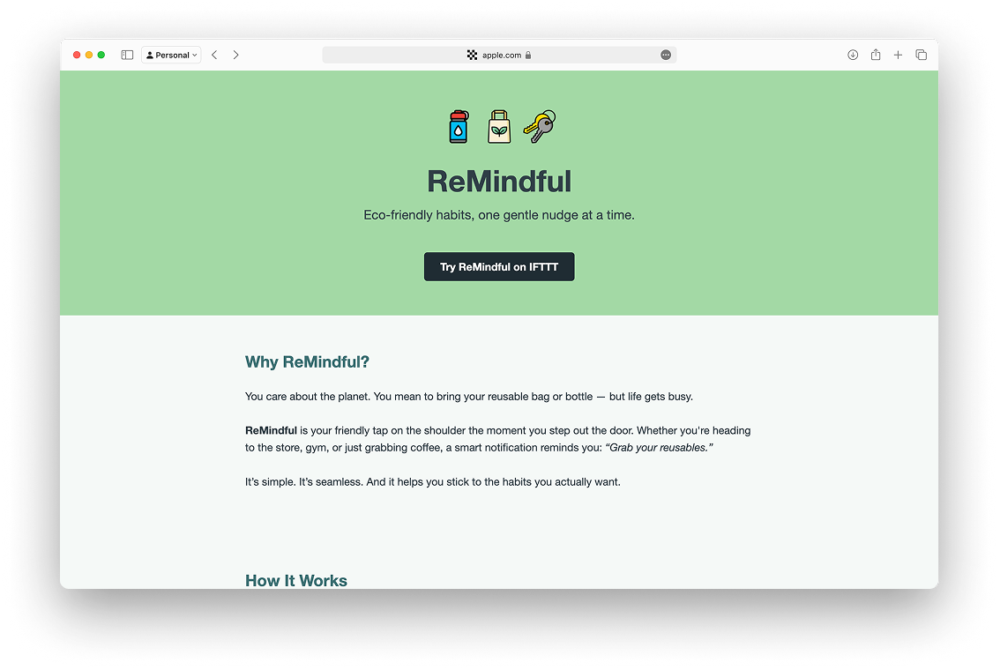

S1A1: Who's the ugly duckling? Created using ASCII.
STILL LIFE
S1A2: A CSS still life exploration. Hover over elements!
CHOCOLATE BOX
S1FP: Life is a box of chocolates - choose your fate! Part of a DSGN 1020 web ring.

MATCHA GUIDE
S2A2: Your guide to finding the best matcha cafes. Click on each post-it to learn more!

WORLD CLOCK
S2FP: View times across cities on a dot clock.

FOREST ADVENTURE
S3A1: Choose your own adventure in a mystical forest.

REMINDFUL
S3A2: Eco friendly habits, one gentle nudge at a time. Created using API linked with IFTTT.
SKYLINE MAKER
S3FP: Create your own city skyline by hovering your mouse at different heights.
Reading
Week 2: Ulises Carrión - Mail Art and the Big Monster from Second Thoughts
In the reading, the author criticizes the misconception that mail art is only about creating and mailing postcards. The author claims that mail art transforms the postal system into a canvas for creative expression, encouraging responses and fostering connections. He uses "big monster" as a metaphor for the constraints that artists face with the systemic challenges of the postal system. I found this article's perspective on mail art fascinating, especially its argument that the postal system is more of a support than a medium.
1. What is the role of mail art in today's age where traditional mail is declining due to digital forms of communication?
2. Could mail art evolve into a different art form with the growing use of digital mediums?
Week 3: Laurel Schwulst & Édouard U - Selections from Creative Independent & Arena How Do You Use the Internet Mindfully
I think Laurel Schwulst brings up a really good point in how websites are personal and can grow and change however you want it to, whereas social media platforms are static and controlled by corporations. Edouard U builds on this idea by emphasizing the importance of making connections between ideas rather than sticking to a rigid way of thinking. I think this is especially a relevant conversation to have with the recent TikTok ban and how much control corporations and governments can have over our digital spaces. Edouard U's idea of creating knowledge networks also makes me wonder if we could use personal websites to make more meaningful connections online and share ideas outside the limits of corporate algorithms, and make them accessible to a wider audience as well.
1. If websites are "living spaces," what responsibilities do we have as creators of these spaces in shaping the internet as a whole? 2. Should we think of our websites as part of a collective ecosystem rather than isolated projects?
Week 4: Olia Lialina - STILL THERE Ruins and Templates of Geocities from Lost and Living (in) Archives
This reading explores how the internet's history has been erased and what that means for the future of digital culture. What stood out to me was how the amateur aesthetics of Geocities (animated GIFs, bordered backgrounds, web rings, etc.) were once seen as outdated but now are seen as nostalgic or even influential in art. The author raises important questions in who controls online history and how much of the early internet experience is worth preserving.
1. Do we really have control over our digital presence, or are we just borrowing space until tech companies decide it's no longer valuable?
2. How do you think web design trends today will be remembered or critiqued in the future?
Week 7: Bojana Coklyat & Shannon Finnegan - Selections from Alt-Text as Poetry Workbook
I really liked how the authors compared alt-text to poetry and translation, emphasizing that descriptions are inherently subjective and should be written with intention. The idea that artists should take responsibility for making their work accessible stood out to me, though I wonder if institutions should take more of that burden rather than putting it on already under-resourced creators. I also appreciated the exercises that push writers to consider audience and context, which feels like an important shift from the typical "just describe what you see" approach.
1. The authors argue that alt-text is inherently subjective and should be approached with creativity, yet they also emphasize its role in accessibility. How do we balance expressiveness with clarity and inclusivity when writing alt-text, especially for different audiences?
2. What role should institutions, platforms, or technology play in ensuring accessibility, and how can we move toward more systemic support for alt-text implementation?
Week 8: Ramsey Nasser - "A Personal Computer for Children of All Cultures" from Decolonising the Digital
In this reading, the author explores the dominance of English in computing, highlighting how programming languages and software exclude non-English speakers. His experiment with Qalb (Arabic programming language) ultimately proves how inescapable English is in tech. This reading raises important questions about whether true linguistic inclusivity in computing is even possible, or if the global standardization of English is an inevitable trade-off for efficiency and interoperability; I wonder if a more realistic solution lies not in replacing English, but in designing better tools that bridge the gap.
1. Nasser argues that the dominance of English in computing is not just a technical issue but a cultural and historical one. Given the global nature of technology, is it realistic (or even desirable) to create a truly multilingual programming environment?
2. The reading highlights how software often unintentionally reinforces linguistic and cultural biases, such as the failure of digital typography to properly support non-Latin scripts. What steps could realistically be taken to make computing more accessible to non-English speakers?
Week 10: David Reinfurt - Selections from A *New* Program for Graphic Design
The reading on Gestalt principles really made me think about how much of design relies on perception. The idea that we don’t just see individual elements but instead group them based on patterns like proximity and similarity feels intuitive, yet I hadn’t considered how structured this process actually is. It makes me wonder how much control designers have over what people perceive vs. what the brain does automatically. I also found it interesting how these principles, originally studied in static visuals, might work differently in digital design, where motion, interaction, and even AI-generated layouts constantly shift what we see.
1. In an era of digital and interactive design, how do Gestalt principles adapt to elements that move, change, or respond to user input?
2. How might understanding Gestalt principles help designers create more accessible and inclusive experiences for people with different cognitive or visual processing styles?
Week 12: Dot Tuer - Beyond the New Media Frame The Poetics of Absence in Vera Frenkel’s String Games
The reading presents a powerful interplay between presence and absence, using teleconferencing tools to explore what it means to be “connected” in a digital age. I was intrigued by how the performance mimicked interactivity through the metaphor of Cat’s Cradle, yet deliberately revealed the emotional and physical voids left by mediated communication. I found it surprising (and honestly frustrating) that something so ahead of its time was overlooked for so long, partly because Frenkel was a woman working in a male-dominated tech space. Frenkel’s use of improvisation, narrative fragments, and archival material invites reflection on how we store and perform memory.
1. In what ways does String Games challenge our current understanding of what constitutes “interactive” or “new media” art?
2. How does the concept of a “poetics of absence” reframe the potential and limitations of using digital technology to represent trauma and historical memory?
Week 13: Paul Soulellis - Performing the Feed
Soulellis’s argument made me rethink what it means to “publish” today. I appreciated his distinction between the old model of the post (as an interruption demanding attention) and the modern feed, which slips into our awareness as ambient texture. The shift from fixed containers of knowledge to smooth, algorithmic flows definitely feels real, especially on platforms like TikTok or Instagram where meaning seems secondary to rhythm and repetition. I’m curious about what it means to create work that can interrupt the feed, rather than just add to it. If publishing is now about layering and entanglement, how do we retain a sense of intentionality or authorship?
1. How might we design experiences or interfaces that create intentional moments of pause or reflection within the infinite scroll?
2. Is it possible, or even desirable, to “archive” the feed, and what would that look like in practice?
Week 14: Neta Bomani & Sabii Borno - Beyond Dark Matter from Logic Issue 15 Beacons
The story uses a simple narrative to unpack heavy truths about the roots of computing and how tech isn’t neutral. I appreciated how it drew attention to the language and history embedded in everyday tools (like the term "master/slave" in coding) which we often accept without thinking. What stuck with me most was The Beyond's message: that community itself is a form of technology, one that can't be computed but can guide us through uncertainty. It made me rethink what it means to “know” technology; maybe it’s less about technical skill and more about understanding the systems and values it’s built on.
1. How can we design software or computing systems that don't replicate harmful historical hierarchies like the master/slave model?
2. What does it mean to treat community as a form of technology, and how might that reshape our approach to innovation or education?
Week 15: Boris Groys - Art on the Internet
I found Groys' argument about the internet collapsing the boundary between art production and presentation especially interesting. It resonates with how our creative processes are constantly on display, sometimes even more than the finished product. The idea that our online activity forms a “public archive” of our identity is both powerful and unsettling. While it's liberating to bypass institutional gatekeepers, I wonder if constant exposure limits our ability to create without performance pressure. At the same time, I appreciate Groys’ framing of the archive as a utopian tool, especially his point that recontextualization can breathe new life into creative work. It challenges me to think more critically about how I use the internet not just to share, but to build future value through curation and storytelling.
1. If creative work is always "exposed" online, can artists ever truly create without external influence? Does this affect the authenticity of their process?
2. How might we design digital spaces that protect the "secrecy" or solitude necessary for authentic creativity, while still allowing public sharing?